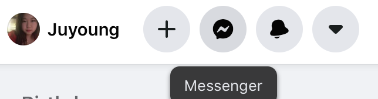
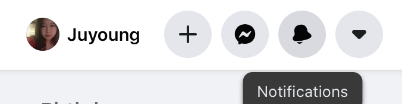
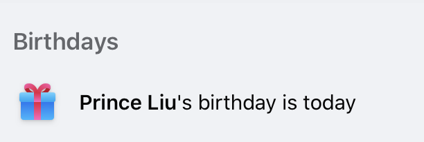
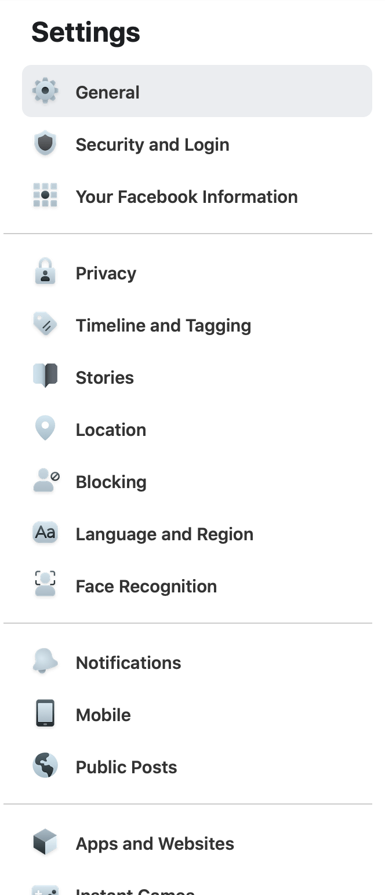
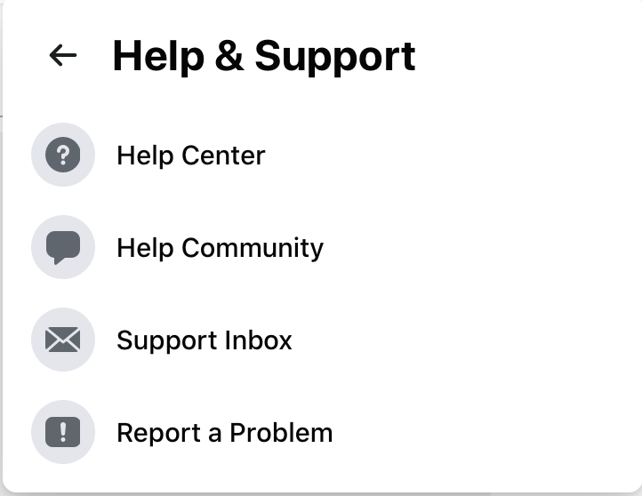

Visibility is almost perfect. I can see menu bar, my profile image, stories, birthday and contacts information at once.
9/10
10/10
7/10
10/10
There is no exit icon or emergency exit button. I am Mac OS user, so if I swipe to the right, I can go to the back page.
There is no different word, situation, or action that means same meaning.

When I try to change my profile name, it got me a message that I cannot change name for the next 60 days. It is not pop-up messsage, so I can read carefully before tyring to change the name. It is shown in little blue background box.


Icon is more recognizable than word. The message icon is same as facebook message app, and notification icon is bell which has been used a lot for notification.
Instagram has quick action which is tapping twice for like the post. However, Facebook does not have one, no keyboard short cut nor macros neither.


It is not minimalist design, but it is because it contains lot of information in one page such as birthday or contact list.

there is too many option tab in once.


It is easy to find help page and have many options to get help.